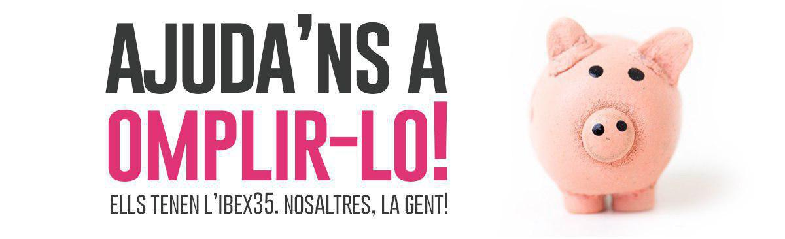

Donatius

La campanya electoral serà llarga i necessitarem diners per dur-la a
terme. Ens ajudes amb un donatiu? Instruccions a sota del
formulari!
Per motius aliens a la nostra voluntat, el sistema només permet fer el
tràmit en castellà, us posem unes breus indicacions en català. Front
Republicà apostem per la plena normalització de la llengua catalana com
a eina de cohesió.
Instruccions per fer un donatiu:
- Escolliu la quantitat. Pot ser una quantitat prefixada o bé una
quantitat que decidiu vosaltres.
- Escolliu just a sota de la quantitat si voleu fer el donatiu un sol
cop o de forma mensual.
- Feu click al botó marcat com a "Siguiente"
- Ompliu les dades del formulari que us apareixerà a continuació. Tots
els camps (nom i cognom, correu electrònic, país, adreça, codi postal,
ciutat, estat / provincia i NIF) són obligatoris,
- Marqueu la casella d'acceptació de les condicions d'ús i feu click
al botó blau marcat com "Siguiente"
- Introduïu al formulari següent les dades de la vostra targeta de
crèdit.
- Opcionalment, marqueu la casella si voleu afegir a la vostra donació
les despeses de processament addicionals. Si no ho feu, es
descomptaran aquests diners de la vostra donació.
- Feu click al botó blau i haureu donat!